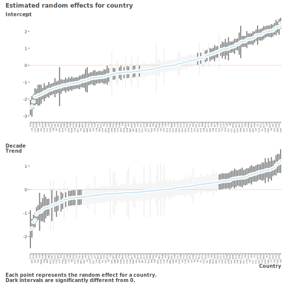
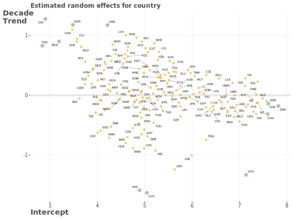
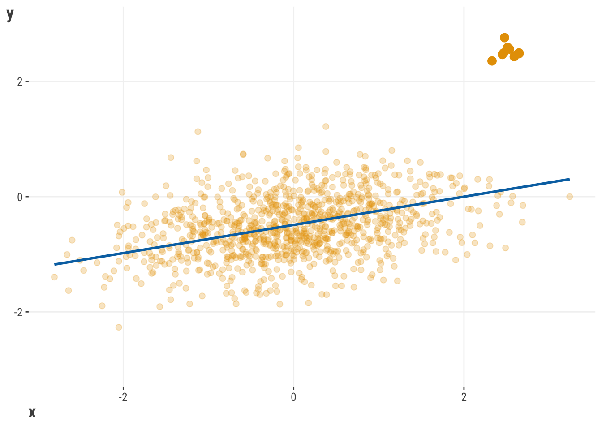

df_reviews = read_csv('https://tinyurl.com/moviereviewsdata')
model_baseline = lm(rating ~ children_in_home + genre, data = df_reviews)
model_interaction = lm(rating ~ children_in_home * genre, data = df_reviews)
summary(model_interaction)9 Extending the Linear Model
With just linear and generalized linear models, we have a very solid foundation for modeling, and we’ve seen how there is a notable amount we can do with a conceptually simple approach. We’ve also seen how we can extend the linear model to handle different types of target distributions to help us understand and make some inferences about the relationships between our features and target.
In this chapter, we will extend our linear models with additional common and valuable modeling tools. These methods provide good examples of how we can think about our data and modeling approach in different ways, and they can serve as a foundation for exploring more advanced techniques in the future. A thread that binds these techniques together is the ability to use a linear model to investigate explicitly nonlinear relationships!
9.1 Key Ideas
- The standard and generalized linear models are great and powerful starting points for modeling, but there’s even more we can do!
- Linear models can be used to model nonlinear feature-target relationships!
- While these seem like different approaches, we can still use our linear model concepts and approach at the core, take similar estimation steps, and even have similar interpretation. However, we’ll have even more results to explore and interpret.
9.1.1 Why this matters
The linear model is a great starting point for modeling. It is a simple approach that can be used to model a wide variety of relationships between features and targets, and it’s also a great way to get a feel for how to think about modeling. But linear and generalized models are just the beginning, and the models depicted here are common extensions used in a variety of disciplines and industries. More generally, the following techniques allow for nonlinear relationships while still employing a linear model approach. This is a very powerful tool to have in your toolkit, and it’s a great way to start thinking about how to model more complex relationships in your data.
9.1.2 Helpful context
While these models are extensions of the linear model, they are not significantly more complicated in terms of how they are implemented or how they are interpreted. However, like anything new, it can take a bit more effort to understand. You likely want to be comfortable with standard linear models at least before you start to explore these extensions.
9.2 Interactions
Things can be quite complex in a typical model with multiple features, but just adding features may not be enough to capture the complexity of the relationships between features and target. Sometimes, we need to consider how features interact with each other to better understand how they correlate with the target. A common way to add complexity in linear models is through interactions. This is where we allow the effect of a feature to vary depending on the values of another feature, or even itself!
As a conceptual example, we can think about a movie’s rating being different for movies from different genres. For example, maybe by default ratings are higher for kids movies, and lower for horror movies. But, genre and season might work together in some way to affect rating, e.g., action movies get higher ratings in summer. Or maybe having kids in the home might also interact with genre ratings by naturally resulting in higher ratings for kids movies. As a different example, we might also consider that the length of a movie might positively relate to rating, but plateau or even have a negative effect on rating after a certain point. In other words, it would have a curvilinear effect where really long movies aren’t as highly rated as those of shorter length.
All of these are types of interactions we can explore. Interactions allow us to incorporate nonlinear relationships into the model, and so greatly extend the linear model’s capabilities - we basically get to use a linear model in a nonlinear way!
With that in mind, let’s explore how we can add interactions to our models. Going with one of our examples, let’s see how having kids impacts the relationship between genre and rating. We’ll start with a standard linear model, and then add an interaction term. Using a formula approach makes it very straightforward to add an interaction term. We just need to add a : between the two features we want to interact, or a * to denote both main effects and the interaction. As elsewhere, we present simplified results in the next table.
import pandas as pd
import statsmodels.formula.api as smf
df_reviews = pd.read_csv('https://tinyurl.com/moviereviewsdata')
model_baseline = smf.ols(
formula = 'rating ~ children_in_home + genre',
data = df_reviews
).fit()
model_interaction = smf.ols(
formula = 'rating ~ children_in_home * genre',
data = df_reviews
).fit()
model_interaction.summary()Here is a quick look at the model output for the interaction vs. no interaction interaction model. Starting with the baseline model, the coefficients look like what we’ve seen before, but we have several coefficients for genre. The reason is that genre is composed of several categories, and converted to a set of dummy variables (refer to Section 3.5.2 and Section 14.2.2). In the baseline model, the intercept tells us what the mean is for the reference group, in this case Action/Adventure, and the genre coefficients tell us the difference between the mean for that genre and the reference genre. For example, the mean rating for Action/Adventure is 2.76, and the difference between that genre rating for the drama genre is 0.55. Adding the two gives us the mean for drama movies 2.76 + 0.55 = 3.32. We also have the coefficient for the number of children in the home, and this does not vary by genre in the baseline model.
| feature | coef_base | coef_inter |
|---|---|---|
| (Intercept) | 2.764 | 2.764 |
| children_in_home | 0.142 | 0.142 |
| genreComedy | 0.635 | 0.637 |
| genreDrama | 0.554 | 0.535 |
| genreHorror | 0.129 | 0.194 |
| genreKids | −0.199 | −0.276 |
| genreOther | 0.029 | 0.084 |
| genreRomance | 0.227 | 0.298 |
| genreSci-Fi | −0.123 | −0.109 |
| children_in_home:genreComedy | −0.006 | |
| children_in_home:genreDrama | 0.053 | |
| children_in_home:genreHorror | −0.127 | |
| children_in_home:genreKids | 0.231 | |
| children_in_home:genreOther | −0.106 | |
| children_in_home:genreRomance | −0.124 | |
| children_in_home:genreSci-Fi | −0.029 |
But in our other model we have an interaction between two features: ‘children in the home’ and ‘genre’. So let’s start with the coefficient for children. It is 0.14, which means that for every additional child, the rating for any movie increases by that amount. But because of the interaction, we now interpret that as the effect of children when genre is the reference group Action/Adventure.
Now let’s look at the interaction effect for children and the kids genre. It is 0.23, which means that for the kids genre, the effect of having children in the home increases by that amount. So our actual effect for an additional child for the kids genre is 0.14 + 0.23 = 0.37 increase in the expected review rating. In other words, the effect of children in the home is stronger for kids movies than for other genres.
We can also interpret this interaction in the reverse fashion. It is also correct to say that the difference in rating between the kids genre and the reference group Action/Adventure when there are no kids in the home is -0.28. This means kids movies are generally rated worse if there are no kids in the home. But, with an increase in children, the difference in rating between the kids genre and Action/Adventure increases by 0.23. In other words, it is a difference in differences1.
When we talk about differences in coefficients across values of features, it can get a little bit hard to follow. To combat this, we believe that in every case that you employ an interaction, you should look at the interaction visually for interpretation. Here is a plot of the predictions from the interaction model. We can see that the effect of children in the home is stronger for kids movies than for other genres, which makes a whole lot of sense! In other genres, the effect of having children seems to produce little difference, and in others it still has a positive effect, but not as strong as for kids movies.

So we can see that interactions can allow a linear effect to vary depending on the values of another feature. But the real take home message from this is that the general effect is actually not just a straight line! The linear effect changes depending on the setting. Furthermore, the effect for children when the interaction is present only applies when ‘genre’ is at its default group, or when other features are at their default or zero.
So, when we have interactions, we can’t talk about a feature’s relationship with a target without considering the other features it interacts with. Some might see this as a downside, but it’s actually how most feature relationships work - they don’t exist in isolation. Interactions let us model these complex relationships, and they’re used a lot in real-world situations.
9.2.1 Summarizing Interactions
So what is the effect of children in the home? Or a particular genre, for that matter? This is a problematic question, because the effect of one feature depends on the setting of the other feature. We can summarize interactions, and we show two ways in which to do so. But we need to be very careful about summarizing a single feature’s effects when we know it interacts with another feature.
9.2.2 Average effects
One thing we can do is get an average effect for a feature. In other words, we can say what the effect of a feature is on average across the settings of the other features. This is called the average marginal effect, something we’ve talked about in Section 5.5.22. Here is the average effect of children in the home across all genres.
| term | estimate | std.error | statistic | p.value | conf.low | conf.high |
|---|---|---|---|---|---|---|
| children_in_home | 0.152 | 0.03 | 5.68 | 0.00 | 0.10 | 0.20 |
So-called marginal effects, and related approaches such as SHAP values (see Section 5.7), attempt to boil down the effect of a feature to a single number. Here we see the average coefficient for children in the home is 0.15, with a range from 0.1 to 0.2.
But this is difficult even in the simpler GLM settings, and can be downright misleading in interaction models. We saw from Table 9.1 that this average is slightly larger than what we would estimate in the baseline model, and we saw in Figure 9.1 it’s actually near zero (flat) for some genres in the interaction model. So what is the average effect really telling us? Consider a more serious case of drug effects across demographic groups, where the effect of the drug is much stronger for some groups than others. Would you want your doctor to prescribe you a drug based on the average effect across all groups, or the specific group to which you belong?
9.2.3 ANOVA
A common method for summarizing categorical effects in linear models is through analysis of variance or ANOVA, something we briefly mentioned in our chapter introducing the linear model Section 3.5.2.1. ANOVA breaks down the variance in a target attributable to different features or their related effects such as interactions. It’s a bit beyond the scope here to get into all the details, but we demonstrate it here, as it’s also used to summarize interactions. It also summarizes the random effects and spline terms we’ll see in the coming sections on mixed and generalized additive models.
anova(model_interaction)sm.stats.anova_lm(model_interaction)| feature | df | sum_sq | mean_sq | f | p |
|---|---|---|---|---|---|
| children_in_home | 1.00 | 6.45 | 6.45 | 21.25 | 0.00 |
| genre | 7.00 | 86.17 | 12.31 | 40.55 | 0.00 |
| children_in_home:genre | 7.00 | 3.75 | 0.54 | 1.76 | 0.09 |
| Residuals | 984.00 | 298.69 | 0.30 |
In this case, it doesn’t appear that the general interaction effect is statistically significant if we use the typical .05 cut-off. We know the effect of children in the home varies across genres, but this result suggests maybe it’s not as much as we might think. However, we also saw that the estimate for the children effect more than doubled for the kids genre, so maybe we don’t want to ignore it. That’s for you to decide.
The ANOVA approach can be generalized to provide a statistical test to compare models. For example, we can compare the baseline model to the interaction model to see if the interaction model is a better fit. However, it’s entirely consistent with just looking at the interaction’s statistical result in the ANOVA for the interaction model alone, so it doesn’t provide any additional information in this case. Note that the only models that can be compared with ANOVA must be nested, i.e., one model is an explicit subset of the other.
9.2.4 Interactions in Practice
When dealing with interactions in a model, it’s best to consider how the feature-target relationship changes based on the values of other features it interacts with. Visualizing these effects is important in helping us understand how the relationships change. It’s also helpful to consider what the predicted outcome is at important feature values, and how this changes with different feature values. This is the approach we’ve used with interactions, and it’s a good strategy overall.
9.3 Mixed Models
9.3.1 Knowing your data
As much fun as modeling is, knowing your data is far more important. You can throw any model you want at your data, from simple to fancy, but you can count on disappointment if you don’t fundamentally know the structure that lies within your data. Let’s take a look at the following visualizations. In Figure 9.2, we see a positive relationship between the length of the movie and ratings.

We could probably just stop there, but given what we just saw with interaction, we might think to ourselves to be ignoring something substantial within our data: genre. We might want to ask a question, “Does this relationship work the same way across the different genres?”
A very quick examination of Figure 9.3 might suggest that the rating varies by genre, and that the relationship between length and rating varies significantly over the different genres. The group means in the right panel show variability across genres. In addition, on the left panel, some genres show a strong positive relationship, some show less of a positive relationship, a couple even show a negative relationship, and one even looks flat. We can also see that they would have different intercepts. This is a very important thing to know about your data! If we had just run a model with length as a feature and nothing else, we would have missed this important information.
Now consider something a bit more complicated. Here is a plot of the relationship between the length of a movie and the rating, but across release year. Again we might think there is notable variability in the effect across years, as some slopes are positive, some very strongly positive, and some are even negative. How can we account for this when there are so many group effects to consider?

9.3.2 Overview of mixed models
What we’ve just seen might initially bring to mind an interaction effect, and that’s the right way to think about it! A mixed model can be used to incorporate that type of relationship into our model, which we can think of as a group interaction, without much hassle and additional explainability. But it’s actually a quite flexible class that can also allow for more complicated but related types.
Before going too much further, the term mixed model is as vanilla as we can possibly make it, but you might have heard of different names such as hierarchical linear models, or multilevel models, or maybe mixed-effects models. Maybe you’ve even been exposed to ideas like random effects or random slopes. These are in fact all instances of what we’re calling a mixed model.
What makes a model a mixed model? The mixed model is characterized by the idea that a model can have fixed effects and random effects. Fortunately, you’ve already encountered fixed effects – those are the features that we have been using in all of our models so far! We are assuming a single true parameter (e.g., coefficient/weight) to estimate for each of those features, and that parameter is fixed.
In mixed models, a random effect instead comes from a specific distribution, and this is almost always a normal distribution. This random effect adds a unique source of variance in the target variable. This distribution of effects can be based on a grouping variable (such as genre), where we let those parameters, i.e., coefficients (or weights), vary across the groups, creating a distribution of values.
Let’s take our initial example with movie length and genre. Formally, we might specify something like this:
\[ \text{Rating} = b_{\text{int[genre]}} + b_\text{length}*\text{length} + \epsilon \]
In this formula, we are saying that genre has its own unique effect for this model in the form of specific intercepts for each genre3. This means that whenever an observation belongs to a specific genre, it will have an intercept that reflects that genre, and that means that two observations with the same movie length but from different genres would have different predictions.
We also posit, and this a key point, that those group effects come from a random distribution. We can specify that as:
\[b_{\text{int[genre]}} \sim \text{N}(b_\text{intercept}, \sigma_\text{int\_genre})\]
This means that the random intercepts will be normally distributed and the overall intercept is just the mean of those random intercepts, and with its own variance. It also means our model will have to estimate that variance along with our residual variance. Another very common depiction is as follows, that makes explicit the addition of a random effect to the intercept:
\[\text{re}_{[\text{int\_genre}]} \sim \text{N}(0, \sigma_\text{int\_genre})\]
\[b_{\text{int[genre]}} = b_\text{intercept} +\text{re}_{[\text{int\_genre}]}\]
The same approach would apply with a random slope, where we would have a random slope for each group, and that random slope would be normally distributed with its own variance. Compared to our first formulation it would look like this:
\[b_{\text{length[genre]}} \sim \text{N}(b_\text{length}, \sigma_\text{length\_genre})\]
A simple random intercept and slope is just the start. As an example, we can let the intercepts and slopes correlate with one another, and we could have multiple grouping factors, as well as allowing multiple features and even interactions themselves to vary by group! So mixed models can get quite complex, but the basic idea is still the same: we are allowing parameters to vary across groups, and we are estimating the variance of those parameters.
9.3.3 Using a mixed model
One of the key advantages of a mixed is that we can use it when the observations within a group are not independent. This is a very common situation in many fields, and it’s a good idea to consider this when you have grouped data. As an example we’ll use the happiness data for all available years, and we’ll consider the country as a grouping variable. In this case, observations within a country are likely to be more similar to each other than to observations from other countries. Such longitudinal data is a classic example of when to use a mixed model. This is also a case where we wouldn’t just throw in ‘country’ as a feature like any other factor, since there are 164 countries in the data. We need an easier way to handle so many groups!
In general, to use mixed models we have to specify a random effect pertaining to the categorical feature of focus, but that’s the primary difference from our previous approaches used for linear or generalized linear models. For our example, we’ll look at a model with a random intercept for the country feature, and one that adds a random coefficient for the yearly trend across countries. This means that we are allowing the intercepts and slopes to vary across countries, and the intercepts and slopes can correlate with one another. Furthermore, by recoding year to start at zero, the intercept will represent the happiness score at the start of the data. In addition, to see a more reasonable effect, we also divide the yearly trend by 10, so the coefficient provides the change in happiness score per decade.
We’ll use the lme4 package in R which is the most widely used package for mixed models.
library(lme4)
df_happiness_all = read_csv("https://tinyurl.com/worldhappinessallyears")
df_happiness_all = df_happiness_all |>
mutate(decade_0 = (year - min(year))/10)
# random intercepts are specified by a 1
model_ran_int = lmer(
happiness_score ~ decade_0 + (1| country),
df_happiness_all
)
model_ran_slope = lmer(
happiness_score ~ decade_0 + (1 + decade_0 | country),
df_happiness_all
)
# not shown
summary(model_ran_int)
summary(model_ran_slope)As with our recommendation with GAMs later, R is the better tool for mixed models, as the functionality is overwhelmingly better there for modeling and post-processing. However, you can use statsmodels in Python to fit them as well4.
import statsmodels.api as sm
df_happiness_all = pd.read_csv("https://tinyurl.com/worldhappinessallyears")
df_happiness_all = (
df_happiness_all
.assign(decade_0 = lambda x: (x['year']- x['year'].min())/10)
)
model_ran_int = sm.MixedLM.from_formula(
"happiness_score ~ decade_0",
df_happiness_all,
re_formula='1',
groups=df_happiness_all["country"]
).fit()
model_ran_slope = sm.MixedLM.from_formula(
"happiness_score ~ decade_0",
df_happiness_all,
re_formula='1 + decade_0',
groups=df_happiness_all["country"]
).fit()
# not shown
# model_ran_int.summary()
# model_ran_slope.summary()Table 9.4 shows some typical output from a mixed model, focusing on the random slope model. The fixed effect part (Fixed) is your basic GLM result and interpreted the same way. Nothing new there, and we can see a slight positive decade trend in happiness, though maybe not a strong one. But the random effects (Random) are where the action is! We can see the standard deviation of the random effects, i.e., the intercepts and slopes. We can also see the correlation between the random intercepts and random slopes. And finally we also have the residual (observation level) standard deviation, which is interpreted the same as with standard linear regression. Depending on your modeling tool, the default result may be in terms of variances and covariances rather than standard deviations and correlations, but generally similar.
| Parameter | Coefficient | SE | CI_low | CI_high | Group |
|---|---|---|---|---|---|
| Fixed | |||||
| (Intercept) | 5.34 | 0.09 | 5.16 | 5.52 | |
| decade_0 | 0.06 | 0.05 | -0.04 | 0.16 | |
| Random | |||||
| SD (Intercept) | 1.15 | country | |||
| SD (decade_0) | 0.57 | country | |||
| Cor (Intercept~decade_0) | -0.38 | country | |||
| SD (Observations) | 0.34 | Residual | |||
In this case, we can see notable variability attributable to the random effects. How do we know this? Well, if our happiness score is on a 1 - 8 scale, and we have a standard deviation of happiness of 1.13 before accounting for anything else. So, we might surmise that having an effect of that size (roughly 1.15) is a relatively notable amount, as it suggests we would move around about a standard deviation of happiness just going from country to country (on average).
The trend variability is also notable. Although the overall effect is small, the coefficient standard deviation shows that it ranges from a notable negative trend to a notable positive trend (\(\pm\) 0.57) depending on which country we’re looking at.
In addition, we can also see that the correlation between the random intercepts and random slopes is negative, which means that the groups with higher starting points have more negative slopes.
Now let’s look at the estimates for the random effects for the model with both intercepts and slopes5.
estimated_RE = ranef(model_ran_slope)
# mixedup::extract_random_effects(model_ran_slope) # prettier versionestimated_RE = pd.DataFrame(model_ran_slope.random_effects)

How do we interpret these deviations? For starters, they are deviations from the fixed effect for the intercept and decade trend coefficient. So here that means anything negative is an intercept or slope below the corresponding fixed effect value, and anything positive is above that value. If we want the specific effect for a country, we just add its random effect to the fixed effect, and we can refer to those as random coefficients.
For example, if we wanted to know the effects for the US, we would add its random effects to the population level fixed effects. This is exactly what we did in the previous section in our interpretation with the interaction model. However, you can typically get these from the package functionality directly. The result shows that the US starts at a very high happiness score, but actually has a negative trend over time6.
# coef(model_ran_slope) stored here
ranef_usa = estimated_RE$country
ranef_usa = ranef_usa |>
rownames_to_column('country') |>
filter(country == 'United States')
ranef_usa[1, c('(Intercept)', 'decade_0')] + fixef(model_ran_slope) (Intercept) decade_0
1 7.296 -0.2753ranef_usa = estimated_RE['United States'].rename({'Group': 'Intercept'})
ranef_usa + model_ran_slope.fe_paramsIntercept 7.296
decade_0 -0.275
dtype: float64Let’s plot those random coefficients together to see how they relate to each other.

From this plot, we can sense why the estimated random effect correlation was negative. For individual country results, we can see that recently war-torn regions like Syria and Afghanistan have declined over time even while they started poorly as well. Some like Guinea and Togo started poorly but have improved remarkably over time. Many western countries started high and mostly stayed that way, though generally with a slight decline. Perhaps there’s only one direction to go when you’re already starting off well!
9.3.4 Mixed model summary
For a model with just one feature, we certainly had a lot to talk about! And this is just a glimpse of what mixed models have to offer, and the approach can be even richer than what we’ve just seen. But you might be asking- Why don’t I just put genre country the model like other categorical features? In the case of genre for movie reviews where there are few groups, that’s okay. But doing that with features with a lot of levels would typically result in estimation issues due to having so many parameters to estimate. In general mixed models provide several advantages for the data scientist:
- Any coefficient can be allowed to vary by groups, including other random effects. It actually is just an interaction in the end as far as the linear predictor and conceptual model is concerned.
- The group-specific effects are penalized, which shrinks them toward the overall mean, and makes this a different approach from just adding a ‘mere interaction’. This helps avoid overfitting, and that penalty is related to the variance estimate of the random effect. In other words, you can think of it as running a penalized linear model where the penalty is applied to the group-specific effects (see Section 6.8).
- Unlike standard interaction approaches, we can estimate the covariance of the random effects, and specify different covariance structures for observations within groups. Standard interactions implicitly assume independence.
- Because of the way they are estimated, mixed models can account for lack of independence of observations7, which is a common issue in many datasets. This is especially important when you have repeated measures, or when you have a hierarchical structure in your data, such as students within schools, or patients within hospitals.
- Standard modeling approaches can estimate these difficult models very efficiently, even with thousands of groups and millions of observations.
- The group effects are like a very simplified embedding (Section 14.2.2), where we have taken a categorical feature and turned it into a numeric one, like those shown in Figure 9.5. This may help you understand other embedding techniques that are used in other places like deep learning.
- When you start to think about random effects and/or distributions for effects, you’re already thinking like a Bayesian (Section 7.6), who is always thinking about the distributions for various effects. Mixed models are the perfect segue from standard linear model estimation to Bayesian estimation, where everything is random.
- The random effect is akin to a latent variable of ‘unspecified group causes’. This is a very powerful idea that can be used in many different ways, but importantly, you might want to start thinking about how you can figure out what those ‘unspecified’ causes may be!
- Group effects will almost always improve your model’s predictive performance relative to not having them, especially if you weren’t including those groups in your model because of how many groups there were.
In short, mixed models are a fun way to incorporate additional interpretive color to your model, while also getting several additional benefits to help you understand your data!
9.4 Generalized Additive Models
9.4.1 When straight lines aren’t enough
Linear models, as their name implies, generally assume a linear relationship between the features and the target by default. But fitting a line through your data isn’t always going to be the best approach. Not every relationship is linear and not every relationship is monotonic. Sometimes, you need to be able to model a relationship that has a fair amount of nonlinearity – they can appear as slight curves, waves, and any other type of wiggle that you can imagine.
In other words, we can go from the straight line here:
To the curve seen here:

There are many ways to go about this, and common approaches include using polynomial regression, using feature transformations, or using a nonlinear regression model. The curved line in Figure 9.8 is the result of what’s called a spline. It is created by a feature and expanding it to multiple columns, each of which is a function of the original feature. We then fit a linear model to that data as usual. What this ultimately means is that we can use a linear model to fit a curve through the data. While this might not give us the same tidy explanation that a typical linear approach would offer, we will certainly get better predictions if it’s appropriate, and a better understanding of the reality and complexity of the true relationship. It’s also useful for exploratory purposes, and visualization tools can make it easy. Here is some demonstration code (result not shown).
x = rnorm(1000)
y = sin(x)
tibble(x, y) |>
ggplot(aes(x = x, y = y)) +
geom_smooth(method = 'gam', se = FALSE) import plotly.graph_objects as go
import numpy as np
x = np.random.normal(size = 1000)
y = np.sin(x)
fig = go.Figure()
fig.add_trace(
go.Scatter(
x = x,
y = y,
line_shape = 'spline'
)
)Models incorporating this type of effect belong to a broad group of generalized additive models (GAMs). When we explored interactions and mixed models, we explored how the feature-target relationship varies with another feature. There we focused on our feature and its relationship to the target at different values of other features. When we use a GAM, our initial focus is just on a specific feature and how its relationship with the target changes at different of that feature’s values. How are we going to do this, you might ask? Conceptually, we will have a model that looks like this:
\[ y = f(X) + \epsilon \]
This isn’t actually any different than what you’ve seen - it really isn’t! It’s just shorthand for the input \(X\) being fed into a function \(f()\) of some kind, exactly as we saw in Section 2.3.1. That function is very flexible, and can be anything you want.
What we’re going to do with the function now is expand the feature \(x\) in some way, which on a practical level means it will actually become multiple columns of input instead of just one. Some approaches to creating the expansion can be quite complex, with the goal of tackling spatial, temporal, or other aspects of the data. But, in the end, it’s just extra columns in the model matrix that go into the model fitting function like any other feature. This enables the model to explore a more complex representation space, ultimately helping us capture non-linear patterns in our data.
At this point, you might be asking yourself, “Why couldn’t I just use some type of polynomial regression or even a nonlinear regression?”. Of course you could, but both have limitations relative to a GAM. If you are familiar with polynomial regression, where we add columns that are squares, cubes, etc. of the original feature, you can think of GAMs as a more general approach, and very similar in spirit. But that polynomial approach assumes a specific form of nonlinearity, and has no regularization. This means that it tends to overfit the data you currently have, and you are forcing curves to fit through the data, rather than exploring what naturally may arise.
Another approach besides polynomials is to use a nonlinear regression model. In this setting, you need to know what the underlying functional form is. An example is a logistic growth curve model for population growth. Without taking extra steps, such models can also overfit. Furthermore, outside of well-known physical, chemical, or biological processes, it’s rarely clear what the underlying functional form should be. At the very least, we wouldn’t know a formula for life expectancy and happiness!
GAMs are better in such settings because they fit the data well without needing to know the underlying form. They also prevent overfitting in smaller data and/or more complex settings by using a penalized estimation approach. We can use them for multiple features at once, and even include interactions between features. We also can use different types of splines, which you can think of as different functions to apply to features, to capture different types of nonlinearities. Here is another formal definition of a GAM that makes it more clear we can deal with multiple features.
\[ \hat{y} = \sum \mathbf{X_j\beta_j} \]
In this case, each \(X_j\) is a matrix of the feature and its basis expansion, which is created by the spline function. The \(\beta_j\) are the coefficients for each of those basis expansion columns. But a specific \(X_j\) could also just be a single feature and it’s coefficient to model a linear relationship. You can pick and choose, which features to use it on, and how to use it.
The nice thing is that you don’t have to worry about the details of the basis expansion - the package you choose will take care of that for you. You’ll have different options, and often the default is fine, but sometimes you’ll want to adjust the technique and how ‘wiggly’ you want the curve to be.
9.4.2 A standard GAM
Now that you have some background, let’s give this a shot! In most respects, we can use the same sort of approach as we did with our other linear model examples. For our example here, we’ll use the model that was depicted in Figure 9.8, which looks at the relationship between life expectancy and happiness score from the world happiness data (2018). Results are simplified in the subsequent table.
We’ll use the very powerful mgcv package in R. The s function will allow us to use a spline approach to capture the nonlinearity. The bs argument specifies the type of spline, and here we use a B-spline, but there are many options. The k argument provides a means to control the complexity of the spine, historically thought of as ‘knots’ where bends in the curve can occur.
library(mgcv)
df_happiness_2018 = read_csv('https://tinyurl.com/worldhappiness2018')
model_gam = gam(
happiness_score ~ s(healthy_life_expectancy_at_birth, bs = 'bs'),
data = df_happiness_2018
)
summary(model_gam)We can use the statsmodels package in Python to fit a GAM, or alternatively, pygam, and for consistency with previous models, we’ll choose the former. Honestly though, you should use R’s mgcv, as these require notably more work without having some of the basic functionality available there. In addition, there is an ecosystem of R packages to further extend mgcv‘s capabilities, while these are not as mature in Python. Here we must create the spline explicitly first, a so-called ’B-spline’ and add it to the model.
from statsmodels.gam.api import GLMGam, BSplines
df_happiness_2018 = pd.read_csv('https://tinyurl.com/worldhappiness2018')
bs = BSplines(
df_happiness_2018['healthy_life_expectancy_at_birth'],
df = 9,
degree = 3
)
gam_happiness = GLMGam.from_formula(
'happiness_score ~ healthy_life_expectancy_at_birth',
smoother = bs,
data = df_happiness_2018
)
model_gam = gam_happiness.fit()
model_gam.summary()| Component | Term | Estimate | Std.Error | t.value | p.value |
|---|---|---|---|---|---|
| parametric coefficients | Intercept | 5.44 | 0.06 | 92.73 | 0 |
| EDF | Ref.df | F.value | p.value | ||
| smooth terms | s(Life Exp.) | 5.55 | 6.49 | 40.11 | 0 |
When you look at the model output, what you get will depend a lot on the tool you use, and the details are mostly beyond the scope we want to present here (check out Michael’s (2022) document on GAMs for a lot more). But in general, the following information will be provided as part of the summary ANOVA table or as an attribute of the model object:
coefficients: The coefficients for each of the features in the model. For a GAM, these are the coefficients for the basis expansion columns, as well as standard linear feature effects.
global test of a feature: Some tools will provide a statistical test of the significance of the entire feature’s basis expansion, as opposed to just the individual coefficients. In the table we have the intercept and the summarized smooth term.
edf/EDoF: Effective degrees of freedom. This is a measure of ‘wiggle’ in the relationship between the feature and the target. The higher the value, the more wiggle you have. If you have a value close to 1, then you have a linear relationship. With our current result, we can be pretty confident that a nonlinear relationship gives a better idea about the relationship between a country’s life expectancy and happiness than a linear one.
R-squared: Adjusted/Pseudo \(R^2\) or deviance explained. This is a measure of how much of the variance in the target is explained by the model. The higher the value, the better the model. Deviance explained is an analog to the unadjusted \(R^2\) value for a Gaussian model that is used in the GLM setting. It’s fine as a general assessment of prediction-target correspondence, and in this case, we might be feeling pretty good about the model.
Far more important than any of these is the visual interpretation, and we can get plots from GAMs easily enough.
# not shown
plot(model_gam)# not shown
model_gam.plot_partial(0, cpr=True)Unfortunately the default package plots are not pretty, and sadly also aren’t provided in the same way we’d expect for interpretation. But they’re fine for a quick look at your wiggly result. We provide a better looking one here8. The main interpretation is that there is not much relationship between life expectancy and happiness score until you get to about 60 years of life expectancy, and then it increases at a faster rate. Various tools are available to easily plot the derivatives for more understanding.

9.4.3 GAM Summary
To summarize, we can use a GAM to model nonlinear relationships with a linear model approach. We can use splines to capture those nonlinearities, and we can use a penalized approach to control the amount of wiggle in our model. What’s more, we can interact the wiggle with other categorical and numeric features to capture even more complexity in our data. This allows us to model spatial, temporal, and other types of data that have complex relationships.
GAMs are a very powerful modeling tool that take us a step toward more complex models, but without the need to go all the way to a neural network or similar. Plus they still provide standard statistical inference information. In short, they’re a great tool for modeling!
9.5 Quantile Regression
People generally understand the concept of the arithmetic mean, or ‘average’. You see it some time during elementary school, it gets tossed around in daily language, and it is statistically important. After all, so many distributions depend on it! Why, though, do we feel so tied to it from a regression modeling perspective? Yes, it has handy features, but it can limit the relationships we can otherwise model effectively. Here we’ll show you what to do when the mean betrays you – and trust us, the mean will betray you at some point!
9.5.1 When the mean breaks down
In a perfect data world, we like to assume the mean is equal to the middle observation of the data: the median. But that is only when things are symmetric though, and usually our data comes loaded with challenges. Skewness and even just a few extreme scores in your data may cause a rift between the median and the mean.
Let’s say we take the integers between 1 and 10, and find the mean.
\[\frac{1+2+3+4+5+6+7+8+9+10}{10} = 5.5\]
The middle value in that vector of numbers would also be 5.5.
What happens if we replace the 1 with a more extreme value, like -10?
\[\frac{-10+2+3+4+5+6+7+8+9+10}{10} = 4.5\]
With just one dramatic change, our mean went down by a whole point. The median observation, though, is still 5.5. In short, the median is invariant to wild swings out in the tails of your numbers.
You might be saying to yourself, “Why should I care about this central tendency chicanery?” Let us tell you why - the least squares approach to the standard linear model dictates that the regression line needs to be fit through the means of the variables. If you have extreme scores that influence the mean, then your regression line will also be influenced by those extreme scores.
Consider the following regression line:

Now, what would happen if we replaced a few of our observations with extreme scores?

With just a casual glance, it doesn’t look like our two regression lines are that different. They both look like they have a similar positive slope, so all should be good. To offer a bit more clarity, let’s put those lines in the same space:

With 1000 observations, we see that having just 10 relatively extreme scores is enough to change the regression line, even if just a little. But that little bit can mean a huge difference for predictions and the conclusions we come to.
There are a few approaches we could take here, with common approaches being dropping those observations, winsorizing them, or doing some transformation. Throwing away data because you don’t like the way it behaves is almost statistical abuse, and winsorization is just replacing those extreme values with numbers that you like a little bit better. Transformations done independently of the model rarely work for this purpose either. So let’s try something else!
9.5.2 A standard quantile regression
A better answer to this challenge might be to try a median-based approach instead. This is where a model like quantile regression becomes handy. Quantile regression is a type of regression that allows us to model the relationship between the features and the target at different quantiles of the target. For example, we can examine models at the 10th, 25th, 50th, 75th, and 90th percentiles of the target. This is very cool, as it allows us to model the relationship between the features and the target in a way that is robust to outliers and extreme scores. It’s also a way to understand a type of nonlinearity that is not captured by a standard linear model, as the feature target relationship may change at different quantiles of the target.
To demonstrate this type of model, let’s use our movie reviews data. Let’s say that we are curious about the relationship between the word_count and rating to keep things simple. To make it even more straightforward, we will use the standardized (scaled) version of the feature. In our default approach, we will start with a median regression.
library(quantreg)
model_median = rq(rating ~ word_count_sc, tau = .5, data = df_reviews)
summary(model_median)model_median = smf.quantreg('rating ~ word_count_sc', data = df_reviews)
model_median = model_median.fit(q = .5)
model_median.summary() | feature | coef | conf.low | conf.high |
|---|---|---|---|
| (Intercept) | 3.09 | 3.05 | 3.26 |
| word_count_sc | −0.29 | −0.40 | −0.20 |
Fortunately, our interpretation of this result isn’t all that different from a standard linear model - the rating should decrease by -0.29 for every bump in a standard deviation for the number of words, which in this case is about 5 words. However, this concerns the expected median rating, not the mean, as would be the case with standard linear regression.
Quantile regression is not a one-trick-pony though - being able to compute a median regression is just the default. As mentioned, we can also explore different quantiles, and this gives us the ability to answer brand new questions - does the relationship between word count and their ratings change at different quantiles of rating? Very cool!
Let’s now examine the trends within 5 different quantiles of the data - .1, .3 .5, .7, and .99. We aren’t limited to just those quantiles though, and you can examine any of them that you might find interesting. Here is a plot of the results of these models.
To interpret our visualization, we could start by saying that all of the model results suggest a negative relationship. The 10th and 90th quantiles seem weakest, while those in the middle show a notably stronger relationship. We can also see that the 90th percentile model is better able to capture those values that would otherwise be deemed as outliers using other standard techniques. The following table shows the estimated coefficients for each of the quantiles, and suggests that all word count relationships are statistically significant, since the confidence intervals do not include zero.
| feature | coef | SE | CI_low | CI_high | quantile |
|---|---|---|---|---|---|
| (Intercept) | 2.27 | 0.03 | 2.21 | 2.33 | tau (0.1) |
| word_count_sc | −0.13 | 0.03 | −0.19 | −0.07 | tau (0.1) |
| (Intercept) | 2.79 | 0.03 | 2.73 | 2.84 | tau (0.3) |
| word_count_sc | −0.23 | 0.02 | −0.27 | −0.19 | tau (0.3) |
| (Intercept) | 3.09 | 0.02 | 3.06 | 3.12 | tau (0.5) |
| word_count_sc | −0.29 | 0.01 | −0.31 | −0.26 | tau (0.5) |
| (Intercept) | 3.32 | 0.02 | 3.28 | 3.36 | tau (0.7) |
| word_count_sc | −0.30 | 0.02 | −0.34 | −0.27 | tau (0.7) |
| (Intercept) | 3.85 | 0.05 | 3.76 | 3.95 | tau (0.9) |
| word_count_sc | −0.14 | 0.06 | −0.25 | −0.03 | tau (0.9) |
| 95% confidence intervals are shown. | |||||
9.5.3 The quantile loss function
Formally, the objective function for the quantile regression model can be expressed as:
Compared to a standard linear regression, we are given an extra parameter for the model: \(\tau\). It’s a number between 0 and 1 representing the desired quantile (e.g., 0.5 for the median)10. The objective function treats positive residuals differently than negative residuals. If the residual is positive, then we multiply it by \(\tau\). If the residual is negative, then we multiply it by \(\tau -1\). The increased penalty for over-predictions for ensures that the estimated quantile \(\hat{y}\) is such that \(\tau\) proportion of the data falls below it, balancing the total loss and providing a robust estimate of the desired quantile.
9.5.4 Rolling our own
Given how relatively simple the objective function is, let’s demystify this model further by creating our own quantile regression model and see if we can get the same results. We’ll start by creating a loss function that we can use to fit our model.
quantile_loss = function(par, X, y, tau) {
y_hat = X %*% par
residual = y - y_hat
loss = ifelse(
residual < 0,
(tau - 1) * residual,
tau * residual
)
sum(loss)
}def quantile_loss(par, X, y, tau):
y_hat = X.dot(par)
residual = y - y_hat
loss = np.where(
residual < 0,
(tau-1)*residual,
tau*residual
)
return sum(loss)This code is just the embodiment of the formula shown for the quantile objective function. Compared to some of our other approaches demonstrated, we add an argument for \(\tau\), but otherwise proceed very similarly. We calculate the residuals or errors in prediction, and then we sum the loss function based on those errors.
Now that we have our data and our loss function, we can fit the model almost exactly like our standard linear model. Again, note the \(\tau\) value, which we’ve set to .5 to represent the median.
X = cbind(1, df_reviews$word_count_sc)
y = df_reviews$rating
optim(
par = c(intercept = 0, word_count_sc = 0),
fn = quantile_loss,
X = X,
y = y,
tau = .5
)$par intercept word_count_sc
3.0886 -0.2852 from scipy.optimize import minimize
import numpy as np
X = pd.DataFrame(
{'intercept': 1,
'word_count_sc': df_reviews['word_count_sc']}
)
y = df_reviews['rating']
minimize(quantile_loss, x0 = np.array([0, 0]), args = (X, y, .5)).xarray([3.0901, -0.2842])Let’s compare this to our previous result, and the OLS results as well. As usual, our simple code does what we need it to do! We also see that the linear regression model would produce a relatively smaller coefficient.
| feature | OLS | QReg | Ours |
|---|---|---|---|
| intercept | 3.051 | 3.089 | 3.089 |
| word_count_sc | −0.216 | −0.285 | −0.285 |
9.6 Wrapping Up
The standard linear model is useful across many different data situations. It does, unfortunately, have some issues when data becomes a little bit more “real”. When you have extreme scores or relationships that a standard model might miss, you don’t necessarily need to abandon your linear model in favor of something more exotic. Instead, you might just need to think about how you are actually fitting the line through your data.
9.6.1 The common thread
The models discussed in this chapter are all linear models, but they add flexibility in how they model the relationship between the features and the target, and provide a non-linear aspect to the otherwise linear model. Furthermore, with tools like mixed models, GAMs, and quantile regression, we generalize our GLMs to handle even more complex data settings.
9.6.2 Choose your own adventure
No matter how much we cover in this book, there is always more to learn. Hopefully you’ve got a good grip on linear models and related topics, so feel free to try out some machine learning in Chapter 10!
9.6.3 Additional resources
There is no shortage of great references for mixed effects models. If you are looking for a great introduction to mixed models, we would recommend starting with yet another tutorial by one of your fearless authors! Michael Clark’s Mixed Models with R (2023) is a great introduction to mixed models and is freely available. For a more comprehensive treatment, you can’t go wrong with Gelman & Hill’s Data Analysis Using Regression and Multilevel/Hierarchical Models (2006), and their more recent efforts in Regression and Other Stories (2020), which will soon have an added component for mixed models - Advanced Regression and Multilevel Models (2024).
If you want to dive more into the GAM world, we would recommend that you start with the Moving Beyond Linearity chapter in An Introduction to Statistical Learning (James et al. 2021). Not only do they have versions for both R and Python, but both have been made available online. If you are wanting something more technical, you can’t beat Simon Wood’s book, Generalized Additive Models: An Introduction with R (2017), or a more digestible covering of the same content by one of your own humble authors (Clark 2022).
For absolute depth on quantile regression, we will happily point you to the OG of quantile regression, Roger Koenker. His book, Quantile Regression (2005) is a must read for anyone wanting to dive deep into quantile regression, or just play around with his R package quantreg. Galton, Edgeworth, Frisch, and Prospects for Quantile Regression in Econometrics is another of his. And finally, you might also consider Fahrmeir et al. (2021), which takes an even more generalized view of GLMs, GAMs, mixed models, quantile regression, and more (very underrated).
9.7 Guided Exploration
These models are so much fun, you should feel comfortable just swapping any feature(s) in and out of the models. For example, for the mixed model, try using gdp per capita or life expectancy instead of (just a) trend effect. For the GAM, try using several features with nonlinear effects and see what shakes out. For quantile regression, try a different feature like movie length and use different quantiles.
library(lme4)
library(mgcv)
library(quantreg)
df_happiness = read_csv('https://tinyurl.com/worldhappinessallyears')
# Mixed Model
model_mixed = lmer(
happiness_score ~ ??? + (1 | country),
data = df_happiness_2018
)
model_gam = gam(
happiness_score ~ s(???)...,
data = df_happiness
)
model_quant = rq(
happiness_score ~ ???,
tau = ???,
data = df_happiness
)import pandas as pd
import statsmodels.formula.api as smf
from statsmodels.gam.api import GLMGam, BSplines
df_happiness = pd.read_csv('https://tinyurl.com/worldhappinessallyears')
# Mixed Model
model_mixed = smf.mixedlm(
'happiness_score ~ ???',
data = df_happiness,
groups = df_happiness['country']
).fit()
bs = BSplines(
df_happiness['???'],
df = 9, # fiddle with these if you like
degree = 3
)
gam_happiness = GLMGam.from_formula(
'happiness_score ~ ???',
smoother = bs,
data = df_happiness
).fit()
model_quant = smf.quantreg(
'happiness_score ~ ???',
data = df_happiness['???']
).fit(q = ???) Some models that employ an interaction that investigates categorical group differences like this actually call their model a difference-in-difference model.↩︎
These results are provided by the marginaleffects R package, which is a great tool.↩︎
The error term \(\epsilon\) is still assumed normal with mean zero and variance \(\sigma^2\).↩︎
One of your authors worked for several years with the key developer of the mixed models functionality in statsmodels. As such, we can say there is zero doubt about the expertise going into its development, as there are few in the world with such knowledge. Even so, you probably won’t find the functionality is not as mature or as expansive as what you get in R.↩︎
MC provides a package for mixed models in R called mixedup. It provides a nice way to extract random effects and summarize such models (link).↩︎
Life expectancy in the US has actually declined recently.↩︎
Independence of observations is a key assumption in linear regression models, and when it’s violated, the standard errors of the coefficients are biased, which can lead to incorrect inferences. Rather than hacking a model (so-called ‘fixed effects’ models) or ‘correcting’ the standard error (e.g., with some ‘sandwich’ or estimator), mixed models can account for this lack of independence through the model itself.↩︎
We used the see package in R for a quick plot. We also recommend the functionality via the gratia package to visualize the derivatives, which will show where the feature effect is changing most.↩︎
The R function can take a vector of quantiles, while the Python function can only take a single quantile, so you would need to loop through the quantiles.↩︎
This is equivalent to using the least absolute deviation objective.↩︎